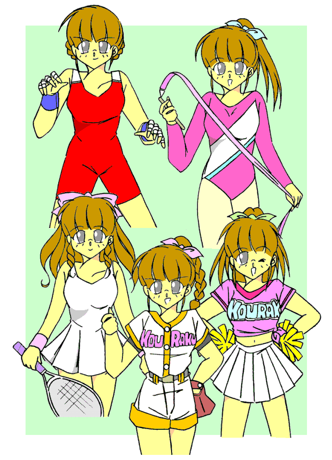

春休み――
休みとはいえ、運動部が活動している。
新三年生と新二年生……一年は四月を待たないといけない。
本来ならば、新三年生が仮入部などするはずもない。
だけど僕は、「助っ人でいいから来て欲しい」と、いくつかの部から誘われていた。
僕自身、この流されやすい性格を改めて、女の子にならないようにするために、男らしさを磨く必要があった。
そう……“闘争心”を、である。
あるいは“向上心”をそう置き換えてもいい。……だから僕は、いろんな部活からの「助っ人」の誘いに乗ったのだった。
今日の僕は、体操部の顧問に誘われて、部の練習に参加することになっている。
春休みなので、部活は放課後からじゃなくて、朝からである。
格闘じゃなくても、鍛えていれば……「鬼」になれば精神の弱さを、流されやすさを克服できるはず――
そう思って、僕は部室のドアを叩いた。
…………数分後、あたしはレオタードに身を包み、体育館でリボンを振っていた（……涙）。
着せ替え少年
Ｄｒｅｓｓ ｕｐ ｂｏｙ９ 〜プリンセスナイン〜
作：城弾
「はっはっはっは、なかなかやるな。……だが日本じゃあ二番目だ」
要求された演技が終わると、風水（かざみ）司郎先生が拍手をしながら芝居がかった調子で話しかけてきた。
肩口に白い手袋を挟み込んでいる……何故に？
「先生……体操部じゃなくて新体操部なら、前もってそう言ってくださいっ」
あたしはてっきりマット運動や器械体操の「体操部」かと思って来たのに、部室に招き入れられた途端に大勢の女子にピンクのレオタードを着せられちゃって――
「はっはっは、すまなかったな。……だが二村、君は精神の鍛錬のために入部したいと言っていたな。それなら俺がみっちりしごいてやるぞ」
先生は一旦そこで言葉を切った。切れ長の目がなんだか怖い。
「俺は君のおじさんである本剛さんに技を、そしてその友人である市紋次さんに力を鍛えてもらった。いわば俺の中では、力と技の二つの風車が回っているのさ。今度は俺がその恩を返す番だ」
「……だからってレオタードなんて着せられたら、余計に女らしくなっちゃいます」
今のあたしは新体操の選手ということで、胸はあまり膨らんでいない。スポーツをする女子には、胸はじゃまなだけなんだろうなぁ。
「……うん、ぴったしだよね」
「よく似合っているわ」
「真紀恵のがサイズ合ってたね」
「『後楽高校のピンク・アルバトロス』と一緒なら、新体操クィーンも夢じゃないかも……」
新体操部の女子部員たちが、あたしのレオタード姿を口々に評している。
だ……ダメだ。このままここにいたら、新体操部に正式入部させられて……完全に女の子になってしまう。
「か、風水先生っ」
「本部長と呼んで欲しい」
何ゆえ！？ まぁ別にいいですけど。
「じゃあ本部長、新体操部では余計に女らしくなってしまいます。だから他へ行かせてください」
「そうか。なら俺が顧問を掛け持ちしているもう一つ……レスリング部に行ってみるか」
レスリング！？ アマレスだろうけど格闘技なら、闘争心が高まるから期待できるかも……
あたしがレスリング部で着せられたのは、吊りパンだった……女子用の。
「……本部長っ！」
わずかだが猛々しくなった気がして、強気で抗議する。
「ああ、ここでは参謀長で頼む」
かぶっていないのに帽子をひょいと持ち上げるようにポーズを取り、気取った口調でそう言う風水先生。……なんかややこしいこだわりだわ。
「じゃあ参謀長っ、こんな格好じゃまた女になってしまいますっ。それでは意味がないですっ」
「そうか。……だがちょっと頼みたいことがあってな。まんざら君にも悪い話ではない」
そうこう話していると、やがて準備が整った。相手側はウチの学校じゃない。ま……まさか？
「あの……参謀長っ、これはいくらなんでも……」
「闘争心を高めたいのだろう？ ……なら実戦が一番だっ」
こともなげに言い放つ参謀長。あたしはいきなり練習試合をさせられることになってしまった。
それも、対戦相手は黒い肌のごつい女子。どうやら海外からの留学生らしい。
「ふははははは。私が作り上げた『ケルベロス』相手に、正規メンバーを壊されてはたまらんということか」
相手の高校は、なんと理事長自らがやって来た。
「この天王寺弘司が作り上げた傑作女子選手『ケルベロス』……スピード、パワー、テクニックを兼ね揃えた、まさに三つの顔を持つ彼女のお披露目が目的だ。相手は誰でもいいが、出来れば一番強い相手が欲しかった。だが……まぁ身代わりは賢明だな」
自慢たらしい理事長さんのお言葉。この人も若いころは、スマートで正義感に溢れていたんだろうになぁ……
……宇宙人みたいな顔しているけど。
「参謀長〜〜〜っ！」
さすがにぶっつけ本番では、あたしも弱腰になってしまう。
だが、風水先生はクールに言い放つ。
「二村、君は姿こそ女だが本来は男子。そのパワーで太刀打ちできると考えての起用だっ」
「そんなこといったって〜〜〜っ」
「ああ、テクニックもスピードもないのだから気迫だけだ。その点でも君はその気になりやすいからちょうどいい。トラだ……トラだ……トラになるのだ」
トラ……あたしはトラに……猛獣に……
・・・うがぁあああああっ！！
結果は、あたしの反則負け。
トラになれといわれて、つい「タイガードライバー」を……その前にローリングソバット決めた時点で、もう反則負けだったかも。
プロレスとアマレスは違うと思う……マスクもしてないし。
「ガッデーム（ちくしょう）っ！ フタ・ムラっ！！」
褐色の肌の女子選手ケルベロスは、怒りもあらわにあたしに襲い掛かる。
おっ？ 何？ やる気だってんなら受けて立つわよっ。
あたしの瞳が闘志で光る。だが……
「むっ！？ いかん、この目つき……こいつは危険な相手だ」
そう言うなり理事長さんは、懐に手を突っ込んで何故か一枚のカードを取り出した。「……ケルベロス、戻れっ」
カードを投げつけた（……なんでっ？）理事長さんの命令に従って、ケルベロスさん（笑）は回れ右してすごすごと引き上げていく。
後に残された、あたしたち女子レスリング部員。
「やるじゃないか、二村。その気迫があれば――」
「あの……やっぱり、もうちょっと穏やかなのがいいです……」
後になってから、あたしは流石に怖くなってきた。
十分後、わたしはテニスコートにたたずんでいた。
「……参謀長」
「ここでは行動隊長と呼んでくれ」
もう何でもいいです……「あの……これはあんまりにもお約束じゃないかなと――」
「そうか？ だが、テニスも優雅に見えて闘志を必要とするぞ」
「いえ、それは理解できますけど……女子テニスというのは、やっぱり……」
今のわたしの姿は、女子テニスルック。
ロングヘアを後ろでまとめて、下はもちろんスカートで……御丁寧にアンダースコートまで貸してくれた。
でも、これって貸し借りするようなものなの？ もしかして、わたしは今や完全に女子扱いされているのかしら？（女の子同士でも下着は貸し借りしない気がする……）
「また、どこかからの留学生と『戦う』んですか？」
「いいや、するのはもちろん『特訓』だっ」
ネットの向かい側で、風水先生がラケットを振り上げる。しなった腕が繰り出すラケットは、テニスボールを強烈に打ち出す。
あたしは何とかそれを打ち返した……けど、それだけではダメなのだ。
「数字はッ！？」
「よ……読めません！」
「ええいっ、この程度のことができなくてどうするっ！？」
「そんなぁっ！ こんな猛スピードのボールに書かれた数字を読めなんて無茶ですぅ〜！！」
そうなのだ。
風水先生の「特訓」というのは、別にラリーをすることじゃない。打ち込まれたテニスボールに書かれた数字を読み取れ、という代物だった。
「無茶なものか。動体視力は戦いにおいて不可欠だぞ」
「別に戦いたいわけじゃないです。心と体を鍛えたいだけですっ」
今回、運動部のせいか結構強気。でも女の子なのは変わらない。体育祭でもそうだったけど、こういう場合は「強気な女の子」になるのね……
それはさておき、しばらく考えていた先生はおもむろに、「よろしい。お前に本当の無茶な『特訓』を見せてやる」と言った。
自分の足をロープで結びつけ、春休みの工事のために来ていたクレーン車に逆さで吊られる風水先生。
「いいか、よく見ていろ」
言うなり先生は、腹筋だけで上半身を持ち上げた。地面に対して水平の形……そのままぐるんと回転する。
徐々に勢いがついてきて、コマ……プロペラのように勢いよく回り出す。
「すご……」
思わず声が出た。やがて回転速度が緩んできて、そして止まる。
クレーンで降ろされ、まわりにいた生徒たちが先生を吊っていたロープを外した。
「どうだ？ 私はこれで必殺技を編み出した。これが嫌なら崖から大岩を転がして、それを相手にするのもあるが？」
「無茶言わないでください……」
「う〜んそうか……だが、男に戻りたくないのか？ 必殺技が欲しくないのか？」
必殺技はどうでもいいけど、強い心は欲しい。ようし……あたしはついその気になってしまったけど、
「先生やめてください。つかっちゃんはその気になりやすいんです」
そばで見ていたさつきちゃんがストップをかけた。
彼女はあたしと同じように、明日のソフトボールの試合に助っ人で駆りだされていて、最終調整の真っ最中だったのだけど、風水先生の「特訓」であたりが騒がしくなって、見たらあたしが横にいたからあわてて止めに入った……らしい。
「そうか……そうだな。今はスカートだし、アンダースコートとはいえど逆さづりはまずいか」
……先生、論点ずれてます。
「……つかっちゃん、何をそんなに無茶しているの？」
さつきちゃんが、心配そうに僕の顔を覗き込んでくる。
彼女と一緒の帰り道。僕は男に戻っている。
「うーん、そんなに無茶してるように見える？」
「見えるわよ。……どうしたの？ いきなり」
あ……本気で心配している表情だ。ちゃんと事情を言った方がいいかな？
「やっぱりさ……心と肉体を鍛えないといけないかな、って思って。……ほら、正月のとき、おじさんに鍛えてもらい損ねたし」
そういえば、もうすぐほのかちゃんがうちに来るんで、部屋を一つ空けているところだった。
「それにしても、いきなりな気がするわ……」
確かに、さつきちゃんには前後の繋がりが見えないかも。
「うん、きっかけはあったんだ――」
……そう、アレはつい最近の話。
近所を歩いていた僕の耳に、力強い音が聞こえてきた。
「太鼓……？」
ドンドコドコドコ。リズミカルな、そして力強い太鼓の音。……祭りの季節でもないのに？
その音に興味を持った僕は、誘われるままに音のする方へと歩いていった。
神社だった。
そこに据えられた大きな太鼓……直径２メートルはあるように見えた。タンクトップ姿の男の人が、それを一心不乱に叩いている。
物凄い迫力に、僕はその人から視線を外せなかった。
やがてその人は、手にした二本のばちを高々と掲げあげると……
「いよぉっ！ 爆裂強打の型！」
気合とともにばちを大太鼓に叩きつけて、フィニッシュする。
僕はその気迫に、ひたすら圧倒されていた。
「……ふぅ」
息をつくと、その人はやっと見ていた僕に気がついた。笑顔を浮かべて変な形の敬礼をする。
「結構、鍛えてますっ」
「……」
男の人の名前は日比生さん。なんでも人助けを生業としているとか。
「そっかぁ、少年も苦労して生きているんだな……」
ちゃんと名乗ったんだけど、何故か僕を「少年」と呼ぶ日比生さん。
「はい。いつも女の子にされて……最近じゃ学校でも完全に女子生徒扱いされている気がします」
日比生さんと向かい合わせになって話をする。変身体質のことも打ち明けてしまった。なんとなく、この人になら話してもかまわない……と思わせる雰囲気があった。
そう。今では一部の女子には「君」なしどころか、「つかさ」って名前で呼ばれてる。
それって見下されてるとかじゃなくて、完全に女同士扱いの気がする……
「しかし……ま、流されて女の子になりきるって言うなら、流されて男になることだってあるよなっ」
おおっ、目からうろこ。
そうだ、少なくとも男でいようとさえすれば、何とかなるのかも……
「少年を『鬼』にするつもりはないが、鍛えてみて損はないぞ」
「はい、日比生さん。僕も鍛えてみますっ！」
一条の光明が……って大げさだけど、僕は思わず明るい声を出していた。
「ようし少年、それじゃ景気付けにこれでも飲むかっ」
そう言うと、日比生さんは足元のクーラーボックスから小さなビンのドリンクを取り出した。「……元気ハツラツ」
僕と日比生さんは、腰に手を当ててそれを飲み干した。
「……そんなことがあったんだ」
「うん、鍛えれば精神的なものから来るこの体質も、治せるかも知れないって思って、体育会系の部活の助っ人を引き受けたんだけど――」
「難しいわね……ウチの学校、男女比が偏っているじゃない。野球部もサッカー部も男子はだぶつき気味。それに対して女子運動部は慢性的な部員不足。……つかっちゃん、男子の部活じゃ歓迎されないけど、女子としては心強い助っ人だもの」
「頼りにされても嬉しくない……」
「明日はチアの助っ人だっけ？」
「うん、さつきちゃんたちも女子ソフトの助っ人だよね。その応援団」
応援の応援という形になるのか……なんか変なの。
翌日。あたしはチアガールの衣装に身を包んでいた。
「助かったわ。この前の捻挫が治ってなくて」
あたしに助っ人を依頼したのは、主要メンバーの一人だった。
以前に張り切りすぎて転倒……その時に痛めた足がまだ治ってなくて、あたしに代打要請してきたのだ。
「二村さんならすらっとしてて、羨ましいくらいのプロポーションだから、見栄えするわよ」
「はは……」
今のあたしは胸はＤカップ。お尻も大きめにして、女性的なメリハリのあるプロポーションになっていた。
「さあ、試合が始まるわよっ」
……応援に専念しなくっちゃ♪
女子ソフト部の事情は、前の試合でバント処理の際にダッシュしてきたピッチャーとキャッチャーが鉢合わせして、キャッチャーで部長の人は足を、ピッチャーの人は利き腕の手首をやっちゃったからだ。
今日の試合、キャンセルも考えたけど、さつきちゃんとまことを助っ人にして試合に踏み切ったらしい。
ポジションはまことがピッチャーで、さつきちゃんがキャッチャー。
ピッチャーは自己顕示欲の強いタイプが多いから、演劇部所属のまことに決まったとか。……もちろん実際に投げさせて試した結果もあるようね。
しかし大丈夫かな？ あのふたり。……犬猿の仲なのに。
他のメンバーを動かしたくなかったのもあるみたいだから、バッテリー組まされてるけど。
でもって試合開始。こちらが後攻め。ホームだからかしら？
心配されたまことだけど、かなりの速球をぐいぐいと投げ込んでいく。手をぐるっと一回転させて下手から投げる、ウィンドミル投法だ。
でもこの投げ方だと、胸が邪魔になりそうだけど、そんなこともなくダイナミックに……って胸、無いじゃん？
目深にかぶった帽子で顔はよく見えないけど……まことってば、もしかしたら「男の子」に変身してない？
それなら筋力がアップして、なおかつ邪魔な胸も平たくなって、スポーツやる上では願ったりだけど――
「タイムっ」
相手チームの監督さんも違和感を感じたようだ。ちなみに女の人。確か東尾とかいう名前だったかしら？
「アンタ、今のは女の子の球じゃないよ。男子が女装してるんじゃないの？」
そう指差しながら、つかつかとマウンドに上がっていく。
「はい？ なんでしょう？」
まことは帽子を取って、笑顔を見せる。あ……女の子だ。
でも、あたしにはわかる。投球のときはきっちり「男の子」になってる。「もの言い」がついたときに元に戻ってるのね。
「あたしが男？ そう見えます？ この借り物のユニフォーム、だぶだぶだから体形がよくわからないですものね」
そう言うなり、女監督さんの手を自分の胸元に……うわ、「女同士」といえど大胆だ。
「う……？」「お判りいただけまして？」
さすがに演劇部。よく通る声で、会話がこっちにまで聞こえてくる。
不思議そうに首をかしげながら、ベンチに下がる監督さん。まことは再び帽子で顔を隠す。あ……また男になった。
逆バージョンといえど、あたしと同じ体質。それにしても……味方ながら、なんてずっこい。
でもどうせまことのことだから、「いかさまは、ばれなきゃいかさまじゃないのよ」とか言いそうだ。
結局は三者凡退。上々の滑り出しだった。
後楽高校の攻撃。
「よーし、行くよぉっ！！」
リーダーの号令で、あたしたちもスタンバイ。ポンポン手にして「舞台」に上がる。
「ＧｏＧｏ，Ｌｅｔ’ｓ Ｇｏ！ Ｌｅｔ’ｓ Ｇｏ！ ＫＯＵＲＡＫＵ！！」
ポンポンを持った手を振り、脚を高々と上げて応援する。みんなに届くかしら。
でも不思議……いくら見せる下着といえど、こんなに脚を広げてもぜんぜん恥ずかしくない。
むしろ中途半端だとみっともない感じがする。他の女の子も堂々としているから、あたしが本当は男だからそう感じるわけじゃないみたい。
よーし、あたしたちの応援でみんなに力を与えるわよ。まずは笑顔！ そして明るい声。
「フレッフレッ後楽っ！ レッツゴー後楽っ！！」
……カメラ小僧がいるわ……本当は男のあたし撮って嬉しい？
試合はウチが一点リードで、迎えた最終回。
さすがにまことも疲れているみたい。でもなんとかここまでマウンドを守っている。
うーん……あの強引なアプローチは正直困るけど、この「根性」は見上げたものよね。
引き受けた以上は最後まで責任持って。さすがに意思の力で性転換するだけのことはあるわ。それだけ強靭な精神力というわけね。
それをさつきちゃんも分かっているからか、普段のようないがみ合いは、この試合に関してはなし。
何とかこのまま、仲良くなってくれるといいんだけど……
初球だった。
強烈な打球がまことの足元に飛ぶ。投げ終わった直後で残っていた軸足……右足にもろに当たった。
「……っ！？」
さすがに痛そうな表情になる。打球をさばこうにも、足が上手くでない。
「まこと！？」
キャッチャーのさつきちゃんが飛び出して打球処理をするけど、既にバッターランナーは一塁ベースを駆け抜けた後だった。
マウンド上に輪ができる。まことの状態を案じているのは間違いない。
苦笑……というより、やせ我慢しながら手を振っているまこと。「大丈夫だから」の意思表示かしら？
確認するための投球練習。何とか投げられるようだけど……
あれ？ ソフト部の副部長で負傷中のピッチャー、工藤さんがこっちにやって来た。
「お願い二村さん、万が一のために」
「あたしがソフトに出るんですか？」
「事情が事情だから、向こうもＯＫしてくれると思う。とりあえず若菜さんに投げてもらうけど、ダメだったらお願い」
そう言われても困る……今のあたしはチアの助っ人だし。
「二村さん、行ってあげて。これもある意味では『応援』ですもの」
筋の通ったお願いだったからか、チアの部長さんは快く了承してくれた。
あたしが着替えている間に一人、キャッチボールの間に二人目を歩かせてしまったまこと。やっぱりあの脚じゃ、踏ん張りが利かないみたい。
その証拠ってわけでもないけど、「男の子」に変身できないみたい。ボールにも勢いがない。
「タイムっ」
ソフトの部長さんが、選手の交代を告げる。
｢ピッチャー、二村さん｣
コールされたあたしはマウンドへと向かう。あれ？ ＢＧＭが……「ワイルド・シング」だ。
映画「メジャーリーグ」の名場面、チャーリー・シーン演じるリッキー・ボーンがリリーフに出る場面で、観客がみんなで歌うこの歌。
・・・燃えてきたぁぁぁぁぁっ！！
九回から投げて、ランナーのいないところで締めくくるピッチャーを、「クローザー」という。今のあたしを表現するなら、むしろ「ストッパー」だろう。
なにしろ無死満塁。
「つかっちゃん、どうする？」
いつになく気弱になるキャッチャーのさつき。
「どうもこうもないよっ、さつき」
なんかみんな一斉に驚いた表情だけど……あっ、呼び捨てか。そんなことどうでもいい。
あたしは「ストッパー」になりきったからか、やたらに強気な性格になっていた。
「さつき、あたしも緊急登板だ。こうなりゃ腹くくって行くしかないね。どうせ変化球も細かいコントロールもない。それなら全部ど真ん中にほうってやるよ。適当に散らばるし。その方が勢いがつく」
「む……無茶よ」
「良いから。あんたはあたしを信じて受けてくれれば良いから。頼むよ。あたしの恋女房っ！」
キャッチャーを「恋女房」とはちょっと古臭い表現かな？ でも、さつきも意気に感じてくれたらしい。
「わ……わかった、つかっちゃん。……あなたについていくっ」
興奮しているのか、頬が赤い。内野のメンツもビックリしている。
「さぁさ、投球練習しないとまずいから」
あたしのその言葉で、みんな散り散りに守備に戻った。
試合再開。
一塁ランナー柴田、二塁ランナー小関、三塁ランナー高木……と、三人は全部俊足だったのは試合を見てて理解していた。
そしてバッターの和田も、スラッガー……と。
こうでなくちゃね。火消し冥利に尽きるよ。
あたしは妙に落ち着いていた。だってこりゃどう見ても一点もの。
居直って楽しむ気分になってしまった。あたしも強気だね。けど……女の子のままなのね。
うーん、精神を鍛えて男で固定と思ったけど、どうもこのシチュエーションだと、「気の強い女の子」になるだけみたいね。
まぁいいや。今は関係ない。分析後回し。
「行くよぉ、さつきっ！」
「はいっ」
なんだか女なのに、妙に「男らしい」（？）態度のあたし。呼び捨てにされているのに、さつきは怒るどころか、むしろ嬉々とした印象だ。
その差一点。相手はスクイズで、まず同点も狙ってくるかも。
セオリーなら外角に外すけど、今やたらに強気になっているあたしは、インハイをチョイス。
さして速くない球に、のけぞってよけるバッター。
「こらぁ！ なんて所に投げてるのよっ！？」
なぜかしら？ 監督さんに近目を攻めるなと言われると、激しく抵抗を感じる。
さて。その近めで体を起こした後の定石は、外の落ちる球。そんなの投げられないけど、アウト・ローというのは間違いない。
のけぞらされて体が開いている。そこから一番遠い……打ちにくい球。
だけど定石と言うことは、逆にいえば狙い球。
だからあたしはもう一度インハイに放る。ただし今度はストライクゾーン。
思わずバットを出したバッター。遠めにしぼって近目を打ったので、どん詰まり……ピッチャーゴロだ。
あたしは素早くダッシュすると、グラブでボールを拾って――
「さつきっ！！」
ホームで待っているさつきにトス。サードランナーがフォースアウト。
そのままさつきは一塁へと送球。これも体勢の崩れから、走るのが遅れたバッターランナーは余裕で一塁アウト。
ランナーは二人残るけどツーアウトになった。……よし、バッターオンリー。
「しっかり受け止めなぁ。恋女房ぉ！！」
気合の入りまくるあたしは、思わず叫ぶ。
「はいっ」
なんだか健気にすら思えてくるさつきの声。よーし、あたしも全力で行くよっ。
一球目。ど真ん中ストライク。
さすがにありえない投球に、逆に読みを外されたらしい。バッターは唖然としていた。
二球目。今度は球が上ずって浮き上がる。バットが出るが僅かに狂った……ファウル。
三球目。わざわざ遊んで落ち着かせる道理はない……勝負！
二球目もそうだったが、ど真ん中を狙って全力投球をしているだけ。
元々そんなに細かいコントロールがあるわけじゃない。何も考えずに力任せにど真ん中狙いでほうっているけど、コントロールがないから適当に散らばる。
この三球目もナチュラルにシュートが掛かり、打球を詰まらせる……サードゴロ。
タイミングはきわどかったけど、バッターも三塁側に体重が掛かっていて出遅れたから、一塁で刺せた。
「アウトォ！！」
一塁塁審のアウトを告げる右手が高々と上がり、主審が試合終了を告げた。
「やったぁ！！」
緊急リリーフだったけど、何とか切り抜けた。
喜ぶよりも気が抜けた。あ……気持ちも変わる。強気のストッパーじゃなくて元のチアガールに。……責任を果たしたからかしら。
「つかっちゃん」
さつきちゃんが駆け寄ってくる。そのままあたしに抱きついてくる。……ええっ？
「つかっちゃん、かっこよかった。男らしかったよ」
きらきらと光る瞳で見上げてくる。それはさておき……「男らしかった」？
でもあたしの体は女のまま……つまり……いくら闘争心を高めても、シチュエーションに流されたら「女の子」のままってこと？
「強気の女の子」にはなれても、「何を着ても自分を保てる強さ」は無理ってこと？
あ……こんなにたくさん運動部に参加したのに、ぜ〜んぶ無駄骨――
「高城さんっ！ つかさくんから離れなさいよっ！！」
足を引きずりながら、まことが目を吊り上げて詰め寄ってきた。
「私が退場したからってぬけがけしないでよっ！！ ……つかさくんもつかさくんよっ、高城さんのこと、『恋女房』だなんてっ！！」
「……！？」
…………アタシ、ソンナコトクチバシリマシタ？…………
「うん、確かに言ってたわ」
「マウンド上で愛の告白なんて、やるわね♪」
「禁断の恋だけど、あたしたちは応援するわよっ」
無責任にはやし立てるソフト部員たち。本当にとんでもないことを口走ってたみたい……
「つかっちゃ〜ん♪」
「あああっ！ 抱きしめないでっ！！」
陶酔しきった表情で、さつきちゃんがあたしに身を預けて……
……翌日。
「つかさぁ、今日は女子バスケに『恋女房』のさつきちゃんと一緒に助っ人って言ってなかった？」
姉ちゃんが呼びかけてくる。ちゃっかりからかいも入っている。
「パスでキャンセルでスルーっ！！」
僕は布団にくるまったまま、怒鳴り返す。
男で散々こんな状況になったけど、そのときは女の子になってごまかした。……けど、女の子バージョンでまでやっちゃって……恥ずかしいったらありゃしない。
いくら闘争心を高めても女の子になってたらそのままとわかったし、男子運動部は部員がだぶついていて、三年の僕が入る余地なんてない。
反対に女子運動部は手ぐすね引いて、僕を待っているけど。
とにかく助っ人に行って「鍛えて」も、無駄……
「つかっちゃあん、約束したんだから行かなきゃだめだよぉ。一緒にいきましょう〜♪」
なんだかむやみやたらに甘い響きを含ませた、さつきちゃんの口調。
まだ誤解したままだぁ……女の子の時に口走ったのを真に受けている誤解は解かないと……
仮病じゃなしに頭が痛くなってきた。

今回はスポーツウェア縛り。
もしかすると一般服以上に男女の差があるかもです。
ただ闘争心がテーマだったので、あまり可愛くはできなかったかな……と。
服のチョイスは、まずは新体操でレオタード。
水着は何度かやってるけど、これはなかったので水泳部でなく新体操部に。
「タッチ」ではなく「ネギま」がネタになるあたり僕ですが（笑）
次の吊りパンは、自分のサイトでリクエストを募ったら出てきたので。
こっちでは「スクラン」ネタが。
続いてもうちょっと優雅にと思い、女子テニス。
「エースをねらえ」とかやればよかったんでしょうけど「剣」になるあたりが（以下略）
チアガールからソフトへの乱入は予定通り。
ソフトでは、最初は、
「あ……アレは？ （広島→太平洋・クラウン・）西武（→横浜大洋→ダイエー）の永射？」
「こ……これはっ（阪神→南海→）広島（→日本ハム→西武）の江夏！？」
「今度は巨人（→西武）の鹿取だぁーっ」
と、歴代名ストッパーのマネをして討ち取る……というつもりでしたが、つかさの年で知ってるはずもなく（笑）。
ちなみに女性服で性転換する子ですから、利き腕くらい簡単に変わります（考えて見ると凄い話だ）。
ピンチ脱出も、さつきがパスボールしたと見せかけ、三塁ランナーを誘い出し、二塁から来たランナーと三塁に二人という状況。
先に両者にタッチ。三塁ランナーが占有権あるので、二塁ランナーは飛び出した形でタッチアウト。
このアウトのコールで勘違いした最初の三塁ランナーが、ベースを離れたところにタッチでダブルプレイと考えてましたが、マニアックだし（笑）わかりにくいから、ホームゲッツーに。
リョウの退場は、当初は足の付け根にイレギュラーの打球が……でしたが、あんまりなので差し替え。
このネタは『同居人・後日談』の「松島勝一（美香子）」に流れてます。
お約束ネタ。
本部長で参謀長で行動隊長の人（笑）。３号ライダーなどとあわせて、都合５作品のキャラで。
理事長さんもアンデッドと合体したり、「でゅわ！」の人
そしていきなり登場の鍛えている鬼の人（笑）。
司君、すっかり明日夢クン状態。
今回もお読みいただき、ありがとうございました。
城弾
□ 感想はこちらに □